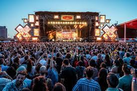
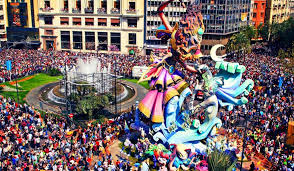

Festivales de música España es conocida por ser uno de los países con mayor número de festivales de música. Algunos de los más populares son el Primavera Sound en Barcelona, el Festival Internacional de Benicàssim(FIB), el Aquasella en Asturias, Monegros en Huesca, el Mad Cool en Madrid, el BBK Live en Bilbao, O Son Do Camiño en Galicia, entre muchos otros. Estos festivales suelen contar con una amplia oferta musical, incluyendo géneros como rock, pop,electrónica, indie, flamenco, música latina, entre otros.
Conciertos en salas y recintos: También es muy común encontrar conciertos de artistas nacionales e internacionales en salas de conciertos y recintos de gran capacidad en cuidades como Madrid, Barcelona, Valencia, Bilbao, Sevilla, entre otras. Estos conciertos abarcan una amplia variedad de géneros, desde música clásica hasta música urbana.
.jpg)
Verbenas y fiestas populares: En muchas localidades de España se celebran verbenas y fiestas populares en las que la música juega un papel fundamental. Estas fiestas suelen incluir actuaciones de orquestas, grupos de música tradicional, bandas de música, entre otros. Un ejemplo de este tipo de fiestas es la Feria de Abril en Sevilla, las fiestas de San Fermín en Pamplona o las Fallas en Valencia.
Ópera y música clásica: España cuenta con inportantes teattros de ópera y conciertos que ofecen una amplia programación durante todo el año. El Gran teattro del Linceu en Barcelona, El Teatro Real en Madrid, el Palau de les Arts Reina Sofía en Valencia, son algunos ejemplos delugares emblemáticos para disfrutar de la ópera y la música clásica.
.jpg)